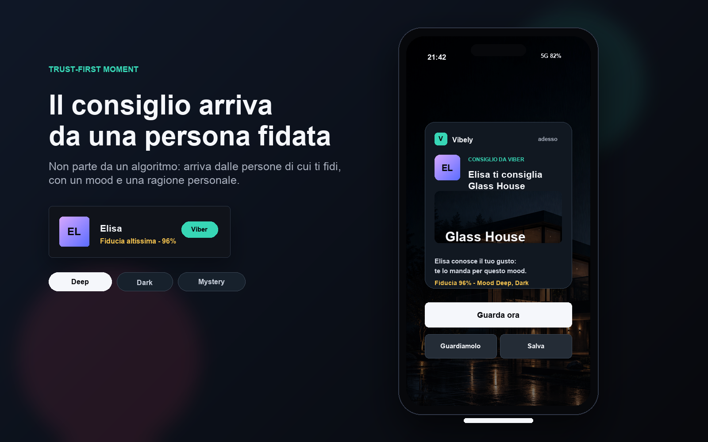

Profilo, mood, catalogo, community, rating TV e reminder telefono.
UX case study
Vibely trasforma il consiglio in un gesto di cura.
Il progetto esplora un modo piu umano di scegliere cosa guardare: non partire solo dal catalogo o da una raccomandazione automatica, ma da persone fidate o affini, dal mood del momento e dal contesto relazionale in cui nasce il consiglio.
MVP creato da Domenico Di Domenico
Progetto di ricerca e definizione del problema sviluppati con il gruppo di lavoro

Consigli guidati da persone fidate, mood e attenzione verso l'altro.
Domenico Di Domenico, Filippo Petrocchi, Elisa Scorcelletti, Dario Esposito, Serena D'Augenio.
Overview
Dal momento di scelta solitario a un'esperienza piu umana, fidata e relazionale.
Vibely ripensa la scelta nello streaming come un momento meno dispersivo e piu vicino al modo in cui le persone decidono davvero: chiedendo, ricordando gusti condivisi, fidandosi di qualcuno che conosce il proprio momento.
La tribe non e solo una community: e un gruppo di Vibers fidati o affini. Il consiglio ha valore perche arriva da una persona che conosce gusti, mood e contesto, trasformando un titolo in un gesto di attenzione.
Challenge
Le piattaforme suggeriscono contenuti, ma non sempre capiscono il contesto personale.
La raccomandazione automatica puo essere efficace sul catalogo, ma spesso resta debole sul lato umano: non sa davvero come ti senti, di chi ti fidi e chi potrebbe consigliarti qualcosa nel momento giusto.
La sfida progettuale e rendere visibile quel livello di contesto senza appesantire l'esperienza: una scelta rapida, ma con una fonte riconoscibile, un mood esplicito e una relazione che dia peso al consiglio.
Insights
La qualita del consiglio dipende dalla relazione che lo genera.
La fonte cambia il valore del consiglio.
Un suggerimento da una persona fidata pesa piu di una raccomandazione percepita come automatica, perche porta con se gusto, memoria e relazione.
Consigliare significa prendersi cura del tempo di qualcuno.
Suggerire un contenuto vuol dire pensare all'umore, alla serata e al momento dell'altra persona, non solo condividere un titolo.
Team e responsabilita
Ricerca condivisa, MVP costruito da Domenico Di Domenico.
La ricerca, l'analisi del problema e la definizione del concept sono parte del lavoro di gruppo. L'MVP interattivo e la traduzione del journey in prototipo navigabile sono stati creati da Domenico Di Domenico.
Team di ricerca:
Domenico Di Domenico
Filippo Petrocchi
Elisa Scorcelletti
Dario Esposito
Serena D'Augenio
Ux/Ui Design - MVP Development:
Domenico Di Domenico
UI design e architettura informazioni
Una struttura da piattaforma streaming, con un layer sociale sopra la scoperta.
Home, Serie, Film, Sport
Come Netflix o Disney+, la navigazione primaria resta familiare e orientata al catalogo.
UX case e Reminder
Nel prototipo portfolio questi accessi spiegano il sistema e la notifica senza confonderli con generi di contenuto.
Top 10, mood, community
Le righe organizzano la scoperta: popolarita, stato emotivo e segnali dei Vibers.
Home, Community, Profilo
Su mobile il percorso resta operativo: tornare alla home, leggere la cerchia, modificare il profilo.
Solution
Mood, tribe e caring recommendation costruiscono una scelta piu relazionale.
Scegliere partendo da come ti senti.
I mood danno contesto alla scoperta e aiutano Vibely a proporre contenuti adatti al momento, senza trasformare la scelta in un questionario.
Ricevere consigli da persone fidate o affini.
Ogni suggerimento e associato a un Viber, con avatar, relazione e livello di fiducia, cosi la fonte diventa parte della decisione.
Consigliare come gesto di attenzione.
Rating, consigli, inviti e approvazioni trasformano il contenuto in una micro-azione relazionale: penso a te, al tuo mood e alla tua serata.
Journey cross-device
Due momenti di rating, due comportamenti diversi.
Profilo
L'utente sceglie chi sta guardando e puo costruire il proprio profilo Viber.
Mood
Prima della home seleziona fino a 3 mood oppure salta il passaggio.
Visione
Il catalogo mostra contenuti e consigli filtrati dal contesto del momento.
Rating TV
A fine film: voto, mood e Viber. Nessun testo, perche da telecomando scrivere non e naturale.
Reminder phone
Ore dopo: stesso rating, con nota opzionale per aggiungere sfumature.
Community
Il consiglio entra nel feed, puo generare inviti e puo essere approvato da altri Vibers.
TV
Reazione immediata
Input essenziali: stelle, mood selezionabili, Viber. Il flusso cattura il giudizio quando l'emozione e ancora fresca.
★
★
★
★
★
Deep
Dark
Mind-blown
Telefono
Riflessione in differita
Il telefono permette di trasformare il rating in un consiglio piu personale: stessi mood, contatto fidato e testo facoltativo.
"Te lo mando per quando vuoi qualcosa di teso ma elegante."
EL
Elisa
fiducia 96%
Sistema
Un loop di fiducia e cura che si autoalimenta.
Guardo
→
Valuto
→
Consiglio
→
Ricevo
→
Approvo
→
Fiducia cresce
Segnale umano
Il valore principale non e solo il titolo consigliato, ma chi lo consiglia e per quale situazione emotiva.
Caring
Il consiglio diventa un gesto concreto: qualcuno dedica attenzione al tuo tempo, al tuo umore e al modo in cui vuoi vivere la serata.
Scoperta
La home puo ordinare meglio i contenuti per fiducia, mood e attivita della tribe, mantenendo il catalogo vicino alle relazioni.
Reminder nel user journey
La notifica mostra il momento chiave: qualcuno di fidato ti sta consigliando qualcosa.
La tavola portfolio rende visibile il valore del sistema: titolo, Viber, mood e fiducia arrivano insieme. Le locandine restano contenuto, ma il cuore dell'esperienza e la relazione che rende quel contenuto rilevante e premuroso.
Nel user journey il reminder si posiziona dopo la visione e dopo il primo rating da TV. Ore dopo, sul telefono, l'utente puo completare il feedback, aggiungere una nota e trasformare la reazione in un consiglio piu personale.
MVP scope
Cosa dimostra il prototipo.
Profilo Viber
Un profilo costruito su mood, generi e fiducia verso contatti selezionati o persone affini.
Mood selection
Scelta rapida, multi-selezione massimo 3, con possibilita di saltare.
Community
Consigli, inviti a guardare insieme e approvazione del consiglio con un click per rafforzare la fiducia.
Rating in due tempi
TV per la reazione immediata, telefono per il consiglio piu articolato.
Outcome
Vibely e un'interfaccia per prendersi cura degli altri attraverso i contenuti.
Il valore dell'esperienza sta nel rendere esplicita la relazione dietro un consiglio. Vibely non e solo un sistema di raccomandazione: e un modo per dare peso alla fiducia e trasformare il suggerimento in un atto di caring.
La prossima evoluzione potrebbe validare il modello con utenti reali: quanto la fonte fidata modifica la scelta, quali mood sono davvero utili e quanto l'approvazione della tribe migliora la qualita dei consigli nel tempo.